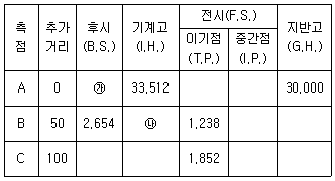
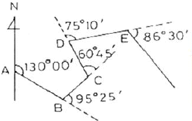
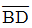
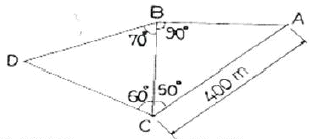
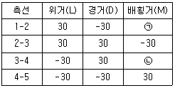
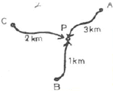
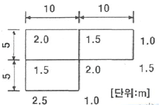
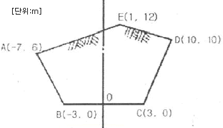
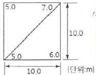
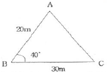

측량기능사 (2016-01-24 기출문제)
1과목: 임의 구분
1. 광파기를 이용하여 50m거리를 ±0.0001m의 오차로 관측하였다. 이와 동일한 조건으로 5km의 거리를 나누어 관측할 경우, 연속 관측값에 대한 오차는?
- ±0.001m
- ±0.007m
- ±0.0001m
- ±0.0007m
(정답률: 72%)

2. 편심과측에서 요구되는 편심요소로서 옳게 짝지어진 것은?
- 중심각, 표고
- 편심점, 중심각
- 편심거리, 표고
- 편심각, 편심거리
(정답률: 76%)
3. 평판 측량에서 측량 구역의 중앙부에 장애물이 많고 측량 지역이 좁고 긴 경우에 적합한 방법은?
- 방사법
- 대각선법
- 전진법
- 수선법
(정답률: 69%)
4. 기고식 야장에서 ㉮, ㉯의 값은 각각 얼마인가? (단, 수준점 A의 표고는 30,000m이다.)[단위:m]

- ㉮ 63.512, ㉯ 34.928
- ㉮ 63.512, ㉯ 36.166
- ㉮ 3.512, ㉯ 34.928
- ㉮ 3.512, ㉯ 36.166
(정답률: 70%)
5. 하나의 측점에서 5개의 방향선이 구성되어 있을 때 조합각 관측법(각 관측법)으로 관측할 경우 관측하여야할 각의 수는?
- 7개
- 8개
- 9개
- 10개
(정답률: 66%)
6. 다음 중 지오이드면에 대한 설명으로 옳은 것은?
- 평균 해수면으로 지구 전체를 덮었다고 생각하는 가상의 곡면
- 반지름을 6370km로 본 구면
- 지구를 회전타원체로 본 표면
- GPS측량의 기준이 되는 면
(정답률: 80%)
7. 그림에서 DE측선의 방위는 얼마인가?

- N 34°35'E
- N 26°10'W
- S 44°30'E
- N 49°00'E
(정답률: 43%)
8. 수준측량을 할 때 전ㆍ후의 시준거리를 같게 취하고자 하는 중요한 이유는?
- 표척의 영점 오차를 없애기 위하여
- 표척 눈금의 부정확으로 생긴 오차를 없애기 위하여
- 표척이 기울어져서 생긴 오차를 없애기 위하여
- 구차 및 기차를 없애기 위하여
(정답률: 65%)
9. 오차의 종류 중 관측자의 부주위로 인하여 발생하는 오차는?
- 착오
- 부정오차
- 우연오차
- 정오차
(정답률: 82%)
10. 우리나라 측량의 평면 직각 좌표계의 기본 원점중 동부 원점의 위치는?
- 125°E,38°N
- 129°E,38°N
- 38°E,125°N
- 138°E,129°N
(정답률: 76%)
11. 방위각 247°20‘40“를 방위로 표시한 것으로 옳은 것은?
- N67°20'40"W
- S22°39'20"W
- S67°20'40"W
- N22°39'20"W
(정답률: 69%)
12. 다음 삼각망에서

의 거리는 얼마인가?
- 257.115m
- 290.673m
- 314.358m
- 343.274m
(정답률: 44%)
13. 두 점간의 거리를 4회 관측한 결과 525.36m를 얻었고, 다시 2회 관측하여 525.63m를 얻었다. 이때 두 점 간의 거리에 대한 최확값은?
- 525.40m
- 525.45m
- 525.50m
- 525.55m
(정답률: 65%)
14. 각 오차30“와 같은 정밀도의 100m에 대한 거리 오차는?
- 0.0145m
- 0.0454m
- 0.1454m
- 0.2931m
(정답률: 46%)
15. 평판 설치의 3요소에 발생하는 오차가 아닌 것은?
- 평판이 수평이 아닐 때 방향 및 높이에 생기는 오차
- 거리를 측정하여 도상에 방향선을 그릴 때 생기는 오차
- 방향 맞추기가 불안전하여 생기는 오차
- 지상점과 도상점이 편위되어 생기는 오차
(정답률: 46%)
16. 측량을 측량 구역의 넓이에 따라 분류할 떄 지구의 곡률을 고려하여 실시하는 측량은?
- 측지 측량
- 평면 측량
- 세부 측량
- 공공 측량
(정답률: 75%)
17. 표의 ㉠, ㉡에 들어 갈 배횡거로 옳게 짝지어진 것은(단위m임)?

- ㉠ 0, ㉡ 0
- ㉠ 30, ㉡ -30
- ㉠ -30, ㉡ 30
- ㉠ -30, ㉡ -30
(정답률: 62%)
18. 평판측량의 특징을 옳지 않은 것은?
- 외업에 많은 시간이 소요된다.
- 기계의 조작이 비교적 간단하다.
- 다른 측량에 비해 정확도가 높다.
- 현장에서 측량이 잘못된 곳을 발견하기 쉽다.
(정답률: 71%)
19. 그림과 같이 P점의 높이를 직접 수준측량에 의해 구했을 때 P점의 최확값은? (단, A→P=21.542m, B→P=21.539m, C→P=21.534m이다.)

- 21.540m
- 21.538m
- 21.536m
- 21.537m
(정답률: 61%)
20. 트래버스 측량에서 각 관측에서 오차가 발생하였을 때, 관측각의 오차 배분조정 방법으로 틀린 것은?
- 각 관측의 경중률이 다를 경우 오차를 경중률에 반비례하여 배분한다.
- 변의 길이 역수에 비례하여 배분한다.
- 각 관측의 정확도가 같을 경우 각의 크기에 비례하여 배분한다.
- 오차가 허용범위를 초과 할 경우 측량을 다시 하여야 한다.
(정답률: 43%)
2과목: 임의 구분
21. 트레버스 측량에서 선점시 주의사항으로 옳은 것은?(오류 신고가 접수된 문제입니다. 반드시 정답과 해설을 확인하시기 바랍니다.)
- 시준이 잘되는 굴뚝이나 바위 등이 좋다.
- 기계를 세울 때 삼각대가 잘 꽂히는 늪지대 같은 곳이 좋다.
- 기계를 세울 때 시준하기 좋고 지반이 튼튼한 곳이 좋다.
- 변의 길이는 될 수 있는 대로 짧고 측점수는 많이 하는 것이 좋다.
(정답률: 66%)
22. A점의 좌표가 XA=50m, YA=100m이고 AB의 거리가 1000m, AB의 방위각이 60°일 때 B점의 좌표는?
- XB=550m, YB=966m
- XB=966m, YB=550m
- XB=916m, YB=600m
- XB=600m, YB=916m
(정답률: 47%)
23. 어느 측선의 방위가 S 45°20'W이고 측선의 길이가 64.210m일 때 이 측선의 위거는?
- ±45.403m
- -45.403m
- ±45.138m
- -45.138m
(정답률: 41%)
24. 트래버스 측량의 조정 방법에 대한 설명으로 틀린 것은?
- 컴퍼스법칙은 각 측량과 거리측량의 정밀도가 대략 같은 경우에 사용한다.
- 트랜싯법칙은 각 측선의 길이에 비례하여 조정한다.
- 컴퍼스법칙은 각 측선의 길이에 비례하여 조정한다.
- 트랜싯법칙은 거리측량보다 각측량 정밀도가 높을 때 사용한다.
(정답률: 47%)
25. 두 점간의 경사거리가 50m이고, 고저차가 1.5m 일 때 경사보정량은?
- -0.015m
- -0.023m
- -0.0033m
- -0.045m
(정답률: 38%)
26. 수준측량시의 오차 원인 중에서 자연적 원인에 의한 오차라고 볼 수 없는 것은?
- 관측 중 레벨과 표척의 침하에 의한 오차
- 지구 곡률 오차
- 기상변화에 의한 오차
- 레벨 조정 불완전에 의한 오차
(정답률: 67%)
27. 삼각망의 종류에서 조건식의 수는 많으나 가장 높은 정확도로 측량할 수 있는 방법은?
- 유심 삼각망
- 복합 삼각망
- 단열 삼각망
- 사변형 삼각망
(정답률: 70%)
28. 수준측량에서 중간점이 많은 경우에 편리한 야장 기입 방법은?
- 기고식
- 승각식
- 고차식
- 약식
(정답률: 67%)
29. 사변형 삼각망에서 변조건 조정을 하기 위하여 Σlog sin A=39.2961535, Σlog sin B=39.2962211이고 표차의 합이 198.45 일때 변조건 조정량은?
- 3.4“
- 4.6“
- 5.2“
- 6.4“
(정답률: 37%)
30. 수준 측량의 용어에 대한 설명으로 옳지 않은 것은?
- 알고 있는 점에 세운 표척의 눈금을 읽은 것을 후시라 한다.
- 표고를 구하려고 하는 점에 표척의 눈금을 읽는 것을 전시라 한다.
- 기계를 고정시켰을 때 기준면에서 망원경 시준선까지의 높이를 기계고라 한다.
- 전시만 취하는 점으로 표고를 관측할 점을 이기점(Turning Point)이라고 한다.
(정답률: 70%)
31. 수평각 관측법 중에서 가장 정확한 값을 얻을 수 있는 방법은?
- 조합각 관측법(각 관측법)
- 방향각법(방향 관측법)
- 배각법(반복법)
- 단축법(단각법)
(정답률: 66%)
32. 수준 측량에 기준이 되는 점으로 기준면으로부터 정확한 높이를 측정하여 정해 놓은 점은?
- 수준 원점
- 시준점
- 수평점
- 특별기준점
(정답률: 69%)
33. 1회 각 관측의 우연오차를 ±0.01m라고 할 때 9회 연속 관측 시 전체 오차는?
- ±0.01m
- ±0.03m
- ±0.09m
- ±0.10m
(정답률: 63%)
34. 삼각 측량의 작업순서로 옳은 것은?
- 조표-선점-각 관측-계산-성과표작성-기선측량-삼각망도 작성
- 선점-조표-기선측량-각 관측-계산-성과표작성-삼각망도 작성
- 선점-조표-각 관측-계산-기선측량-성과표 작성-삼각망도 작성
- 조표-선점-기선측량-각 관측-성과표작성-계산-삼각망도 작성
(정답률: 57%)
35. 다음 수준 측량에서 간접 수준 측량이 아닌 것은?
- 스타디아 수준 측량
- 기압 수준 측량
- 항공 사진 측량
- 핸드 레벨 수준 측량
(정답률: 63%)
36. 인공위성을 이용한 범세계적 위치 결정의 체계로 정확히 위치를 알고 있는 위성에서 발사한 전파를 수신하여 관측점까지의 소요시간을 측정함으로써 관측점의 3차원위치를 구하는 측량은?
- 전자파 거리 측량
- 광파거리측량
- GNSS측량
- 육분의 측량
(정답률: 69%)
37. 토공량을 구하기 위하여 측량을 실시하여 그림과 같은 결과를 얻었다. 이 지역의 전체 토공량은?

- 230m3
- 250m3
- 270m3
- 290m3
(정답률: 56%)
38. 그림과 같은 횡단면의 면적은?

- 75m2
- 1⑤m2
- 124m2
- 210m2
(정답률: 41%)
39. 지형의 표현 방법 중 지형이 높아질수록 색을 진하게, 낮아질수록 연하게 하여 농도를 지표면의 고저를 나타내는 방법은?
- 채색법
- 우모법
- 등고선법
- 음영법
(정답률: 63%)
40. 반지름이 서로 다른 2개의 원곡선이 그 점속점에서 공통 접선을 이루고, 그들의 중심이 공통접선에 대하여 같은 방향에 있는 곡선은?
- 반향곡선
- 복심곡선
- 단곡선
- 클로소이드곡선
(정답률: 57%)
3과목: 임의 구분
41. 3개의 연속된 단면에서 양끝단의 단면적이 각각 A1=40m2, A2=60m2이고 두 단면사이의 중앙에 있는 단면의 면적 Am=50m2일 때 각주공식에 의한 체적은? (이때, 양끝단의 거리는 20m이다.)
- 750m3
- 1000m3
- 1250m3
- 1500m3
(정답률: 48%)
42. GPS에 대한 설명으로 옳지 않은 것은?
- 인공위성의 고도는 약 20,200km이다.
- 인공위성의 공전주기는 1항성일이다.
- GPS위성의 궤도면은 6개이다.
- 우주부분은 GPS위성으로 구성되어 있다.
(정답률: 62%)
43. 노선측량에서 완화곡선의 종류가 아닌 것은?
- 클로소이드 곡선
- 렘니스케이트곡선
- 3차 포물선
- 2차 포물선
(정답률: 62%)
44. 지형 측량의 순서로 옳은 것은?
- 세부측량→측량계획적성→골조측량→측량원도작성
- 측량계획작성→세부측량→골조측량→측량원도작성
- 세부측량→골조측량→측량계획작성→측량원도작성
- 측량계획작성→골조측량→세부측량→측량원도작성
(정답률: 71%)
45. 노선을 선정할 때 유의해야 할 사항으로 틀린 것은?
- 노선은 곡선을 많이 적용하여 지루함이 없도록 한다.
- 토공량이 적고, 절토와 성토가 균형을 이루게 한다.
- 절토 및 성토의 운반거리가 짧아야 한다.
- 배수가 잘되는 곳이어야 한다.
(정답률: 75%)
46. 단곡선을 설치할 때 교각(I)가 38°20‘반지름(R)이 300m이면 중앙종거(M1)는?
- 16.630m
- 4.187m
- 1.049m
- 0.262m
(정답률: 40%)
47. 축척 1:50000지형도에서 A,B점의 도상수평거리가 2cm이고, A점 및 B점의 표고가 각각 220m, 320m일 때 두점 사이의 경사도는?
- 0.1%
- 10%
- 20%
- 30%
(정답률: 46%)
48. GPS측량의 시스템 오차에 해당되지 않는 것은?
- 위성 시준 오차
- 위성 궤도 오차
- 전리층 굴절 오차
- 위성시계오차
(정답률: 49%)
49. 등고선의 종류 중 계곡선을 표시하는 방법으로 알맞은 것은?
- 가는 실선
- 굵은 실선
- 가는 긴 파선
- 가는 짧은 파선
(정답률: 64%)
50. 세변의 길이가 4m, 6m, 8m인 삼각형의 면적은?
- 6.4m2
- 8.9m2
- 11.6m2
- 12.3m2
(정답률: 58%)
51. 토지를 삼각형으로 분할하여 각 교점의 지반고가 그림과 같을 때 전체 체적은?

- 340.4m3
- 475.5m3
- 583.3m3
- 630.2m3
(정답률: 42%)
52. 등고선의 성질에 대한 설명으로 옳지 않은 것은?
- 등고선의 경사가 급할수록 간격이 좁다.
- 등고선은 능선이나 계곡선과 직교한다.
- 등고선은 도면 내 또는 도면 외에서 반드시 폐합한다.
- 등고선은 절대로 교차하지 않는다.
(정답률: 60%)
53. 그림과 같은 삼각형의 면적은?

- 115.3m2
- 192.8m2
- 229.8m2
- 385.6m2
(정답률: 53%)
54. 등고선의 측정 방법 중 측량구역을 정사각형 또는 직사각형으로 분할하고, 각 교점의 표고를 구하여 교점 간에 등고선이 지나가는 점을 비례식으로 산출하는 방법은?
- 기준점법
- 횡단점법
- 종단점법
- 좌표점법
(정답률: 45%)
55. 단곡선을 설치할 때 도로기점에서 교점(I.P.)까지의 거리가 494.25m이고 교각이 84°, 곡선반지름이 250m일 떄 도로기점으로부터 곡선종점까지의 거리는?
- 599.35m
- 619.35m
- 635.67m
- 653.94m
(정답률: 34%)
56. 노선 측량에 있어서 중심선에 설치된 중심 말뚝 및 추가 말뚝의 지반고를 측량하는 것은?
- 횡단 측량
- 용지 측량
- 평면 측량
- 종단 측량
(정답률: 45%)
57. 차량이 도로의 곡선부를 달리게 되면 원심력이 생겨 도로 바깥쪽으로 밀리려 한다. 이것을 방지하기 위하여 도로 안쪽보다 바깥쪽을 높여주는 것을 무엇이라 하는가?
- 레일(R)
- 프랜지(F)
- 슬랙(S)
- 캔트(C)
(정답률: 67%)
58. 용지측량을 위하여 필요한 도면은?
- 현황동
- 지적도
- 국가기본도
- 도시계획도
(정답률: 69%)
59. 단곡선 설치에 있어서 접선과 현이 이루는 각을 이용하여 설치하는 방법은?
- 편각 설치법
- 중앙 종거법
- 지거 설치법
- 종거에 의한 설치법
(정답률: 57%)
60. 각국의 위성측위시스템(GNSS)의 연결이 틀린것은?
- GPS : 미국의 위성측위시스템
- GALLILEO : 유럽연합의 위성측위시스템
- GLONASS : 러시아 위성측위시스템
- QZSS : 인도의 위성측위시스템
(정답률: 65%)
5km 거리에서는 이 오차가 누적되어, 50m 거리를 100번 측정한 것과 같은 효과가 있습니다. 따라서, 5km 거리에서 연속적으로 측정한 값들의 오차는 100배가 됩니다.
즉, 5km 거리에서 연속적으로 측정한 값들의 오차는 ±0.010m 이 됩니다. 하지만 이 중에서 실제 거리와 가장 차이가 큰 값과 가장 작은 값의 차이는 최대 ±0.001m 이하가 됩니다.
따라서, 정답은 "±0.001m" 입니다.